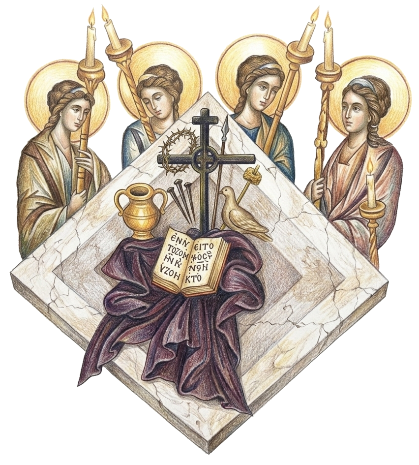
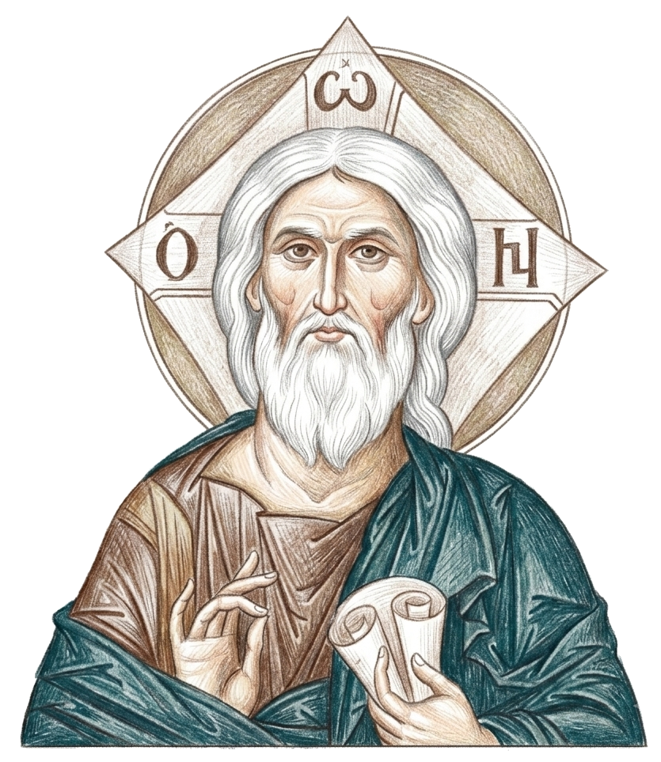
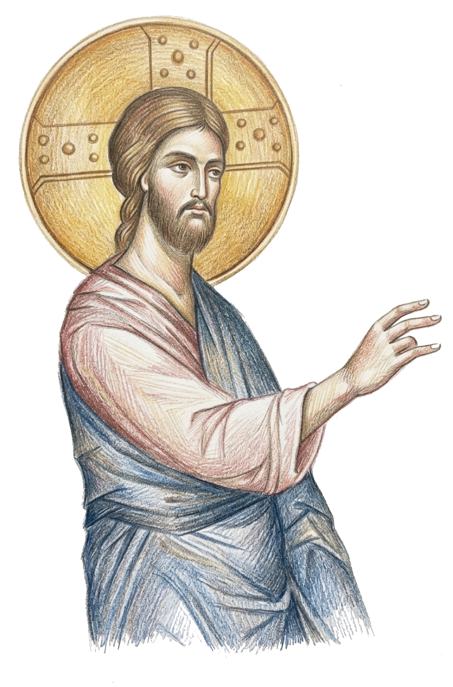
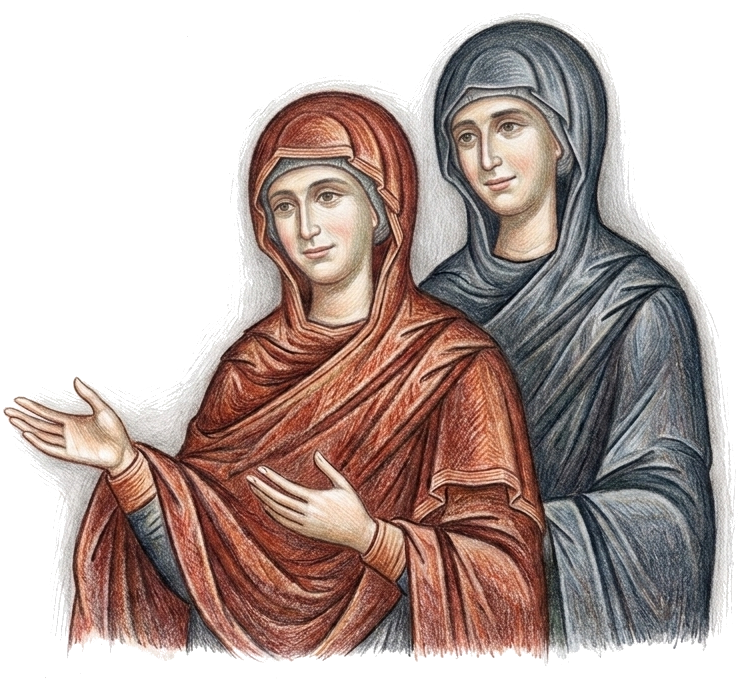
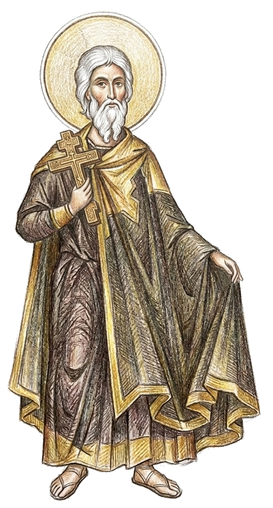
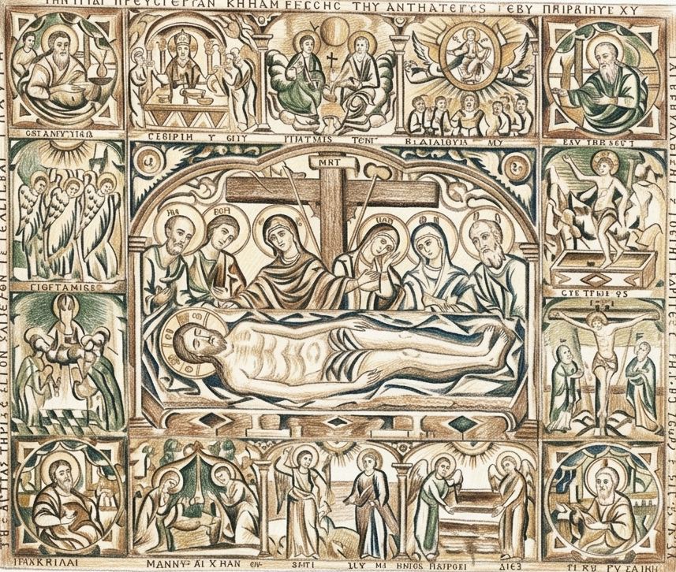
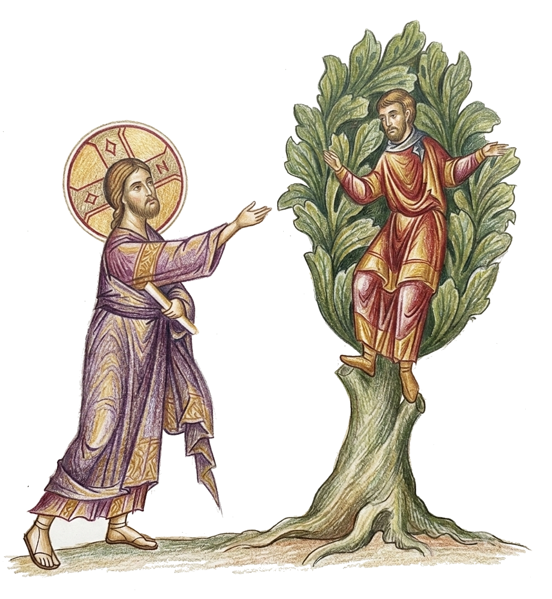
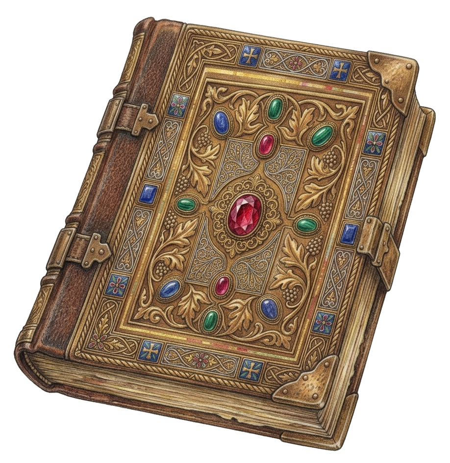

The Little Entrance, Scripture readings, Litanies
The Little Entrance
(Note: A middle column denotes text recited quietly by the priest and deacon in churches where these are read silently.)
People: (Finish the 3rd Antiphon)
Deacon: ▶ Let us pray to the Lord.
Priest: O Master, Lord our God, who hast appointed in heaven orders and hosts of angels and archangels for the service of Thy glory: Grant that with our entrance there may be an entrance of holy angels, serving with us and glorifying Thy goodness. For unto Thee are due all glory, honor, and worship: to the Father, and to the Son, and to the Holy Spirit, now and ever and unto ages of ages. Amen.
Deacon: ▶ Bless, Master, the Holy Entrance.
Priest: Blessed is the entrance of Thy saints, now and ever and unto ages of ages.
When the people near the end of the 3rd antiphon, the priest and the deacon stand before the Altar and make three reverences*. The priest then takes up the Gospels, gives them to the deacon, and they go to the right side and behind the Altar. Coming out by the north door preceded by candle bearers, they make the Little Entrance. Standing before the Holy Doors the deacon says quietly: ▶
When the prayer is finished, the deacon holds his orarion in his right hand and points to the east saying to the priest: ▶
Then the deacon gives the Gospels to the priest to kiss. When the antiphon is concluded, the deacon stands in the center in front of the priest, elevates his hands a little, and, showing the book of the Holy Gospels, says in a loud voice: ▶
Deacon: ▶ Wisdom! Let us attend!
People: O Come, let us worship and fall down before Christ (on Sundays – who rose from the dead) – (on weekdays – who is wonderful in His saints), O Son of God, save us who sing to Thee. Alleluia!
Then, having made a reverence, the deacon enters the sanctuary, followed by the priest, and he lays the Book of the Holy Gospels on the Altar.
Word

“The Little Entrance, so-called to distinguish it from the Great Entrance which initiates the Eucharistic Liturgy, has been given numerous symbolic explanations. For example the emergence of the priest and deacon from the sanctuary with the Gospel, into the body of the church, and their final return with it into the sanctuary, has sometimes been likened to the appearance of
Jesus Christ on earth, coming from heaven (the sanctuary) into the world (the nave), carrying out His earthly mission, and after His Passion and Resurrection, ascending again to the Father. We should recall, however, that at the core of all these explanations is the historical source…, the bringing of the Gospel and the Gifts carried by the clergy, and the collective entrance of all into the church. After the singing of the litanies and antiphons the clergy would vest* outside the sanctuary, and at this point would make entry with the Gospel book into the sanctuary, to the altar which is to actualize the throne of Christ in the Kingdom. …In many ways it is unfortunate that the original practice is not more closely followed, since the sacramental* nature of the coming together of the people, praying together and actualizing the mystical Body of Christ has become somewhat harder to perceive in our present-day order of service.
Recognizing the historical origin, and the arrival of the Gospel – the Word of Life – we can understand the Little Entrance for what it is in the structure of the Divine Liturgy. Here, priest and deacon, as they stand before the Royal Doors, stand at the very threshold of the Kingdom. What happens in these successive stages of the Divine Liturgy is not symbolic, but actual. Thus as the priest advances into the sanctuary through the Royal Doors, he leads the people over the threshold of the Kingdom, stepping literally from this world into the next. And since the whole of the Divine Liturgy is a progression, an ascent, then the clergy and all the people will be lifted up spiritually from the ordinary world into the dimension of the Kingdom of God!”2
Prayer of the Thrice-Holy God
People: (Sing the Tropars* and Kondaks*3 proper to the day.)
Priest: O holy God: who dost rest in the saints; who art hymned by the Seraphim with the thrice-holy cry, and glorified by the Cherubim, and worshipped by every heavenly power; who out of nothing hast brought all things into being; who hast created man after Thine own image and likeness, and hast adorned him with Thine every gift; who givest to him who asks wisdom and understanding; who dost not despise the sinner, but instead hast appointed repentance unto salvation; who hast vouchsafed to us, Thy humble and unworthy servants, even in this hour to stand before the glory of Thy holy altar, and to offer worship and praise which are due unto Thee. Thyself, O Master, accept even from the mouths of us sinners the thrice-holy hymn, and visit us in Thy goodness. Forgive us every transgression, both voluntary and involuntary. Sanctify our souls and bodies, and enable us to serve Thee in holiness all the days of our life. Through the intercessions of the holy Theotokos and of all the saints who from the beginning of the world have been well-pleasing to Thee.
Deacon: ▶ Bless, Master, the time of the Thrice-holy.
The deacon, bowing his head and holding the orarion with three fingers, says quietly: ▶
Priest: For holy art Thou, O our God, and unto Thee we ascribe glory, to the Father and to the Son, and to the Holy Spirit, now and ever.
Deacon: And unto ages of ages.
People: Amen.
Thrice-Holy Hymn
People: Holy God! Holy Mighty! Holy Immortal! Have mercy on us. (3 times)
Glory to the Father, and to the Son, and to the Holy Spirit, now and ever and to ages of ages. Amen.
Holy Immortal! Have mercy on us.
Holy God! Holy Mighty! Holy Immortal! Have mercy on us.
Deacon: ▶ Command, Master.
Priest: ▶ Blessed is He that comes in the name of the Lord.
Deacon: Bless, Master, the High Place.
Priest: Blessed art Thou on the throne of glory of Thy Kingdom, who sittest upon the Cherubim, always, now and ever and unto ages of ages.
The priest and the deacon also say the Thrice-Holy Hymn. Then they make three reverences* toward the Altar.
The deacon says to the priest: ▶
The priest goes to the High Place and says: ▶
The priest then stands on the right side of the High Place, the center being reserved for the Bishop.
Word
The Little Entrance (continued)
“After the Prayer and Praise – the Entrance. In the general movement of the service, we now make a crucial step forward: gathered on earth, as a human community, we are now approaching the Throne of God, we are being introduced into His ineffable* Presence. In our present rite, this mystical meaning of the entrance is obscured because the priest has already been standing before the Altar and the entrance is but a circular procession – from the Altar back to the Altar. The entrance, however, has preserved its pure form in the Pontifical Liturgy*, [a liturgy when a bishop

The prophet Daniel’s vision of God, the Ancient of Days, upon His Throne – “I watched till thrones were put in place, and the Ancient of Days was seated; His garment was white as snow, and the hair of His head was like pure wool. His throne was a fiery flame, its wheels a burning fire; a fiery stream issued and came forth from before Him. A thousand thousands ministered to Him; ten thousand times ten thousand stood before Him.” Daniel 7.9-10
serves] where the bishop, who has been standing until now in the midst of the congregation, for the first time approaches the Altar. This is the original rite, because its meaning is precisely that of a movement forwards and upwards. The whole Liturgy is the procession of the Church following the Ascension of Christ. (See Hebrews ch. 9.) Christ takes us with Him in His glorious Ascension to His Father; He enters the heavenly Sanctuary and we enter with Him and stand before the glory of the Throne of God. The clergy alone perform the entrance, but because the priest is the Head of the Body, spiritually the whole congregation enters with him, and in him stands now before the Altar.
We have entered into the Sanctuary, we stand before God, we prepare ourselves to hear His Word (the bringing of the Gospel in the procession), to offer the sacrifice of our life and to receive the food of the new Being. And signifying this ascension of the Church into the Presence of God, the choir sings the hymn Holy God, Holy Mighty, Holy and Immortal, which the Angels eternally sing at the heavenly throne. The celebrant*, having read the Prayer of the Thrice-holy, proceeds now to the Throne (the High Place — the raised place behind the Altar) and from there turns and faces the people, revealing that now God looks at us, is present to us and we are in His “high and holy place.”4
Reading of the Epistle
Deacon: ▶ Let us attend!
Priest: Peace be to all!
Reader: And to your spirit!
Deacon: Wisdom!
Reader: The prokeimenon*5 in the ______ tone: (The prokeimenon appropriate to the tone and season is sung.)
Deacon: Wisdom!
Reader: The reading of the Epistle of ______.
Deacon: Let us attend!
Reader: Brethren... (then chants the apostle...)
Priest: Peace be to you, reader.
Reader: And to your spirit.
At the conclusion of the Thrice-holy hymn the deacon goes before the Holy Doors and says: ▶
During the singing of Alleluia or the reading of the Epistle, the deacon takes the censer, approaches the priest, receives the blessing from him, and censes the Altar round about and the whole sanctuary, the priest, the iconostasis, and all the people.
The priest stands before the Holy Table and prays the Prayer Before the Gospel. ▶
The Prayer Before the Gospel
Alleluia! Alleluia! Alleluia!
(appropriate to the tone and season.)
People:
Alleluia! Alleluia! Alleluia!
Priest: ▶ Illumine our hearts, O Master, with the pure light of Thy divine knowledge. Open the eyes of our minds to the understanding of Thy gospel teachings. Implant also in us the fear of Thy blessed commandments, that trampling down all carnal desires, we may enter upon a spiritual manner of living, both thinking and doing such things as are well-pleasing unto Thee. For Thou art the illumination of our souls and bodies, O Christ our God, and unto Thee we ascribe glory, together with Thy Father who is from everlasting and Thine all-holy good, and life-creating Spirit, now and ever, and unto ages of ages.
Deacon: ▶ Bless, Master, him that proclaims the good tidings of the Holy Apostle and Evangelist (Matthew, Mark, Luke, or John the Theologian).
Priest: May God, through the prayers of the holy glorious apostle and Evangelist (name), enable you to proclaim the good tidings with great power, to the fulfillment of the gospel of his beloved son, our Lord Jesus Christ.
Deacon: Amen.
The deacon, having put the censer away in its customary place, approaches the priest and bows his head before him. He holds his orarion with the tips of his fingers and, pointing to the Book of the Holy Gospels, says to the priest: ▶
Reading of the Gospel
Deacon: Wisdom! Let us attend. Let us listen to the Holy Gospel.
Priest: Peace be unto all.
People: And with your spirit.
Deacon: The reading of the Holy Gospel according to (name of the Evangelist).
People: Glory to Thee, O Lord, glory to Thee.
Priest: Let us attend!
Deacon: Reads the Gospel.
Priest: ▶ Peace be to you who have proclaimed the Gospel.
When the Gospel reading is concluded, the priest says to the deacon: ▶
The deacon then comes to the Holy Doors and gives the Gospels to the priest. The doors are closed again. The deacon goes to his normal place in front of the Holy Doors and begins the litany.
Word
Reading of the Gospel


“The proclamation of the Word is a sacramental* act par excellence because it is a transforming act. It transforms the human words of the Gospel into the Word of God and the manifestation of the Kingdom. And it transforms the man who hears the Word into a receptacle of the Word and a temple of the Spirit. Each Saturday night, at the solemn resurrection vigil, the book of the Gospel is brought in a solemn procession to the midst of the congregation, and in this act the Lord’s Day is announced and manifested. For the Gospel is not only a ‘record’ of Christ’s resurrection; the Word of God is the eternal coming to us of the Risen Lord, the very power and joy of the resurrection.
In the liturgy, the proclamation of the Gospel is preceded by “Alleluia,” the singing of this mysterious word which is the joyful greeting of those who see the coming Lord, who know His presence, and who express their joy at His glorious ‘parousia’. “Here He is!” might be an almost adequate translation of this untranslatable word — “Alleluia.”
This is why the reading and the preaching of the Gospel in the Orthodox Church is a liturgical act, an integral and essential part of the sacrament. It is heard as the Word of God, and it is received in the Spirit…”6
“The Bible is in a sense a biography of God in this world. In it the Indescribable One has, in a sense, described Himself. The Holy Scriptures of the New Testament are a biography of the incarnate* God in this world. In them it is related how God, in order to reveal Himself to men, sent God the Logos, who took on flesh and became man — and as a man told men everything that God is, everything that God wants from this world and the people in it. God the Logos revealed God’s plan for the world and God’s love for the world. God the Word spoke to men about God with the help of words, insofar as human words can contain the uncontainable God.
All that is necessary for this world and the people in it, the Lord has stated in the Bible. In it He has given the answers to all questions. There is no question which can torment the human soul, and not find its answer, either directly or indirectly, in the Bible. Men cannot devise more questions than there are answers in the Bible. If you fail to find the answer to any of your questions in the Bible, it means that you either posed a senseless question or did not know how to read the Bible and did not finish reading the answer in it.”7
Litany of Fervent Supplication (The Augmented Litany)
Deacon: Let us say with all our soul and with all our mind, let us say:
People: Lord, have mercy.
Deacon: O Lord almighty, the God of our fathers, we pray Thee, hearken and have mercy.
People: Lord, have mercy.
Deacon: Have mercy on us, O God, according to Thy great goodness, we pray Thee, hearken and have mercy.
People: Lord, have mercy. (3 times)
Deacon: Again we pray for our Metropolitan (name), for our Bishop (name), for priests, deacons, and all other clergy; and for all our brethren in Christ.
People: Lord, have mercy. (3 times)
Deacon: Again we pray for the President of our country, for all civil authorities, and for the armed forces.
People: Lord, have mercy. (3 times)
Deacon: Again we pray for the blessed and ever-memorable holy Orthodox patriarchs; and for the blessed and ever-memorable founders of this holy house; and for all our fathers and brethren, the Orthodox departed this life before us, who here and in all the world lie asleep in the Lord.
People: Lord, have mercy. (3 times)
Deacon: Again we pray for mercy, life, peace, health, salvation, visitation, for the servants of God (names), and for the pardon, and forgiveness of the sins.
People: Lord, have mercy. (3 times)
Deacon: Again we pray for those who bring offerings and do good works in this holy and all-venerable house; for those who labor and those who sing, and all the people here present who await Thy great and rich mercy.
People: Lord, have mercy. (3 times)
Prayer of Fervent Supplication
Priest: O Lord our God, accept this fervent supplication of Thy servants and have mercy on us according to the multitude of Thy mercy. Send down Thy bounties upon us and upon all Thy people, who await the rich mercy that comes from Thee. …
While the deacon leads the litany, the priest prays the Prayer of Fervent Supplication.
Priest: … For Thou art a merciful God, and lovest mankind, and unto Thee we ascribe glory: to the Father, and to the Son, and to the Holy Spirit, now and ever, and unto ages of ages.
People: Amen.
Word
Litany of Fervent Supplication
“The Augmented Litany and its concluding prayer (“Fervent Supplication”) is different from the Great Litany, its purpose being to pray for the actual and immediate needs of the congregation. In the Great Litany the individual was requested to pray with the Church, to conform his needs to those of the Church. Here, the Church prays with each individual, mentioning particular needs and offering her maternal care. Any human need can find its expression here…. The priest could announce these special needs (sickness of a member of the parish or a ‘silver wedding’ or the graduation of the parish
youngsters from the school, etc.) and ask the congregation to join in prayers. This litany must express the unity, the solidarity, and the mutual care of all the members of the parish.”8
Standing in Prayer

When the early Christians came together, they either knelt or stood to pray. At the beginning of the service the deacon would announce a subject for everyone to pray for and everyone knelt down and prayed individually. A signal then was given, and all rose to pray together as a body. ‘They knelt to pray as individuals, but the corporate prayer of the Church is a priestly act, to be done in the priestly posture for prayer, standing.’9 When describing the Eucharist, St Justin Martyr states, ‘Then we all stand up together and offer prayers.’10 This was because celebrating the Liturgy was considered a participatory event — not something to be merely watched or listened to. It is interesting to note that even in the West there were no seats for the congregation in any church until after the 17th century. It is only the 19th and 20th centuries which have made our churches the equivalent of classrooms by, among other things, introducing unmovable pews for the faithful. This produced a passive congregation capable only of seeing from afar a clerical performance and hearing passively a clerical instruction.11 Worship was never meant to be passive.
‘The whole man, i.e. the soul and the body, takes part in worship, because the whole man has been assumed by the Son of God in His Incarnation and must be redeemed for God and for His Kingdom. Therefore the various positions of the body in worship…are expressions of worship. Standing is the basic liturgical position (‘let us stand upright’) because in Christ we have been redeemed, given back our true human stature, risen from the death of sin and from the submission to the animal and sinful part of our nature.’12
The Litany for the Catechumens
Deacon: ▶ Pray to the Lord, you catechumens.
People: Lord, have mercy.
Deacon: Let us, the faithful, pray for the catechumens, that the Lord may have mercy on them.
People: Lord, have mercy.
Deacon: That He may teach them the word of truth.
People: Lord, have mercy.
The deacon stands before the Holy doors and says: ▶
Deacon: That He may reveal to them the gospel of righteousness.
People: Lord, have mercy.
Deacon: That He may unite them to His Holy, Catholic, and Apostolic Church.
People: Lord, have mercy.
Deacon: Help them, save them, have mercy on them, and keep them, O God, by Thy grace.
People: Lord, have mercy.
Deacon: Bow your heads unto the Lord, you catechumens.
People: To Thee, O Lord.
The Prayer for the Catechumens
Priest: O Lord our God, who dwellest on high and regardest the humble of heart; who hast sent forth as the salvation of the race of men Thine only-begotten Son and God, our Lord Jesus Christ: Look down upon Thy servants the catechumens, who have bowed their necks before Thee; and make them worthy in due time of the laver of regeneration, the remission of sins and the robe of incorruption. Unite them to Thy Holy, Catholic, and Apostolic Church, and number them with Thy chosen flock. …
Meanwhile, the priest quietly prays the Prayer for the Catechumens.
The priest unfolds the Antimension. (see below)
Then the priest prays out loud: ▶
Priest: ▶ … That with us they may glorify Thine all-honorable and majestic name: of the Father, and of the Son, and of the Holy Spirit, now and ever, and unto ages of ages.
People: Amen.
The Dismissal of the Catechumens
Deacon: All catechumens, depart. Depart, catechumens. Let no catechumen remain.
End of the Liturgy of the Word
Word
The Antimension

“The Antimension is the cloth which is laid on the Altar and on which the Eucharist is placed. It reminds us of the time when Christians were persecuted and the Church had no settled abode. They could not carry an altar from place to place, so they used a Communion cloth into which relics of martyrs were sewn. To us in our day the antimension proclaims that the Church is not confined to any exclusive building, city or locality, but rides like a ship on the waves of this world, nowhere coming to anchor, for her anchor is cast in heaven.”13
The Antimension (continued)
“The Antimension (‘instead of the table’) is the sign of the unity of each community with its bishop. It bears the signature of the bishop and is given to the priest and the parish as “authorization” to perform the Sacrament. The Church is not a loosely “federated” network of parishes, but an organic unity of life, faith, and love. Of this unity, the bishop is the foundation and the guardian…. In addition to his priesthood, the priest is the delegate of the bishop in the parish, and the Antimension is the sign that both the priest and the parish are under the jurisdiction of the bishop, and through him, in the living apostolic succession and unity of the Church.”14
The Prayer for the Catechumens

“The prayers for the catechumens are above all a liturgical expression of a fundamental calling of the Church – precisely the Church as mission. The Church came into the world as mission – ‘Go into all the world and preach the gospel to the whole creation.’ (St Mark 16.15) and cannot, without betraying her nature, cease to be mission. …But do we not live again today in a world that has either turned away from Christianity or has never even heard of Christ? Is not mission again in the center of church consciousness? And is it not a sin against this basic calling when the Church locks herself in her ‘inner’ life and considers herself called only ‘to attend to the spiritual needs’ of her members and thus for all intents and purposes denies that mission is a basic ministry and task of the Church in ‘this world?’”15
The Dismissal of the Catechumens
“The Dismissal of the Catechumens, the final act of the ‘Synaxis,’ is a solemn reminder of the high calling, the tremendous privilege of being a member of the faithful – those who by the grace of baptism and confirmation are fully pledged members of the Body of Christ, admitted as such to participation in the awesome Mystery of His Body and Blood.”16
The Little Entrance

“For the early Church, the Gospel Book was of inexpressible value, for it was the Word of Life. One of the common goals of the persecuting Romans was to confiscate and destroy the Gospel Book. Thus along with the sacred vessels, it was kept in a safe place during the week, and only brought out for the service of the Divine Liturgy. This circumstance would have existed through the early part of the 4th century, changing only with the end of the persecution of Diocletian. What transpired then, was the assembling of believers before the Liturgy began, typically singing Psalms of praise in anticipation of their impending communion with God. The clergy would arrive bearing the Gospel Book and the sacred vessels and enter the church, carrying the Gospel Book to the center of the building (onto the bema in the very earliest churches). Then after the reading of the Gospel lesson to the assembly, the Gospel Book would be carried to the altar. From this real experience have come two portions of the Divine Liturgy: the Antiphons and the Little Entrance. The Little Entrance is the bearing of the Gospel Book into the sanctuary, and it can be traced to the carrying of the Gospel Book into the church. With the end of persecution it could be kept in the church, and until recent times, the practice was for the Gospel to be in the middle of church at the beginning of the Divine Liturgy, and from there to be carried into the sanctuary during the Little Entrance to be read before the altar.”1